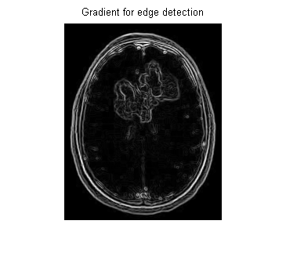
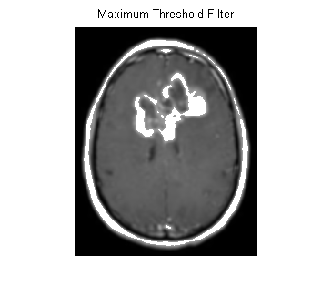

clc;close all;clear all;
image =imread('C:\Users\Zenarul\Desktop\MRI image\images.jpg');
figure,
imshow(image);title('Original Image');
im = imadjust(image,stretchlim(image));
figure,
imshow(im);title('Contrast Image');
I = rgb2gray(im);
figure,
imshow(I);title('Gray Scale Image');
f = imfilter(I, fspecial('average', [3 3]));
figure,
imshow(f);title('Arithmetic mean filter');
B1 = ordfilt2(I,9,ones(3,3));
figure,
imshow(B1);title('Maximum Filter');
B2 = ordfilt2(I,1,ones(3,3));
figure,
imshow(B2);title('Minimum filter');
B3 = ordfilt2(I,5,ones(3,3));
figure,
imshow(B3);title('Median filter');
B3 = ordfilt2(I,5,ones(3,3));
figure,
imshow(B3);title('Median filter');
sobel=[1 2 1;0 0 0;-1 -2 -1];
edge1 = edge(I, 'sobel');
imshow(edge1), title('Edge detection(sobel)');
Prewitt=[-1 -1 -1;0 0 0;1 1 1];
edge2 = edge(I, 'Prewitt');
figure,
imshow(edge2), title('Edge detection(Prewitt)');
hy = fspecial('sobel');
hx = hy';
Iy = imfilter(double(I), hy, 'replicate');
Ix = imfilter(double(I), hx, 'replicate');
gradmag = sqrt(Ix.^2 + Iy.^2);
figure,
imshow(gradmag,[]), title('Gradient for edge detection');
G = fspecial('gaussian',[5 5],2);
Ig = imfilter(I,G);
figure,
imshow(Ig); title('Gaussian Filter');
for i=1:251
for j=1:201
if Ig(i,j)<255 && Ig(i,j)>160
Ig(i,j)=255;
end
end
end
figure,
imshow(Ig); title('Maximum Threshold Filter');
Ig = imfilter(I,G);
for i=1:251
for j=1:201
if Ig(i,j)<255 && Ig(i,j)>160
Ig(i,j)=0;
end
end
end
figure,
imshow(Ig); title('Minimum Threshold Filter');
 